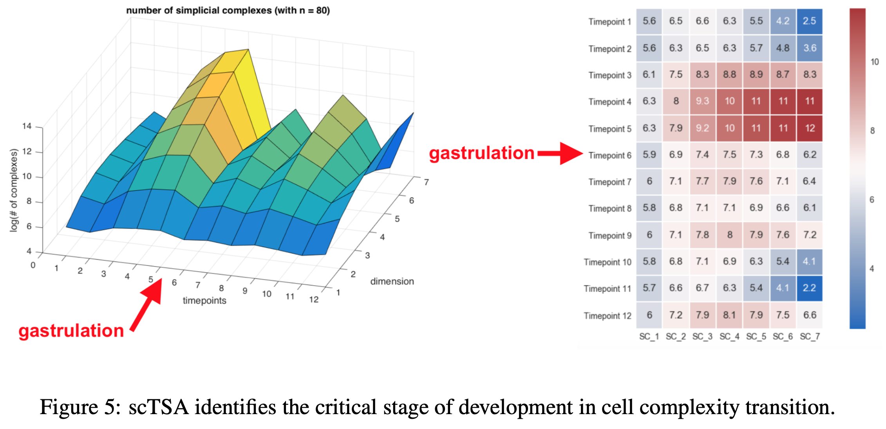
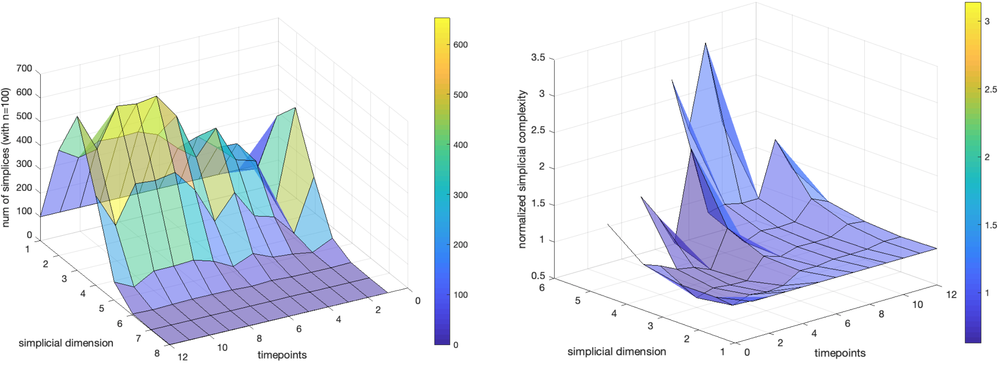
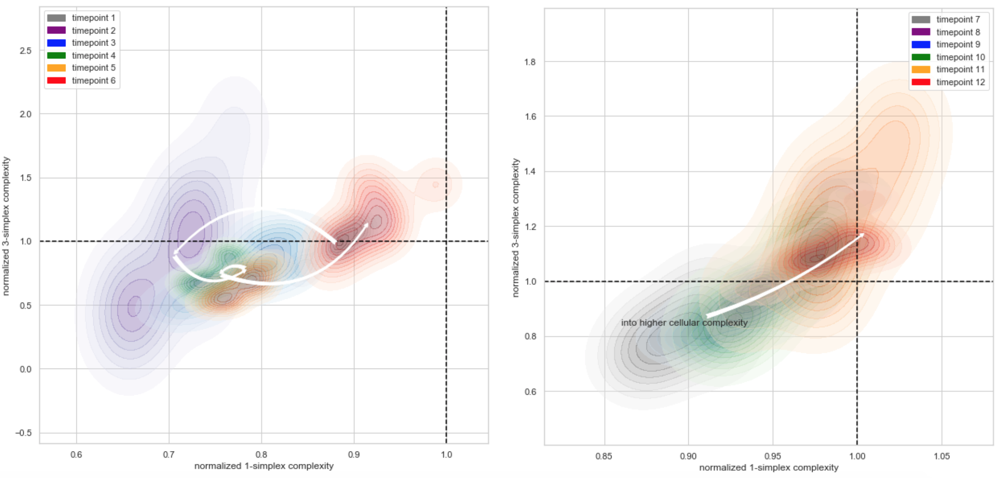
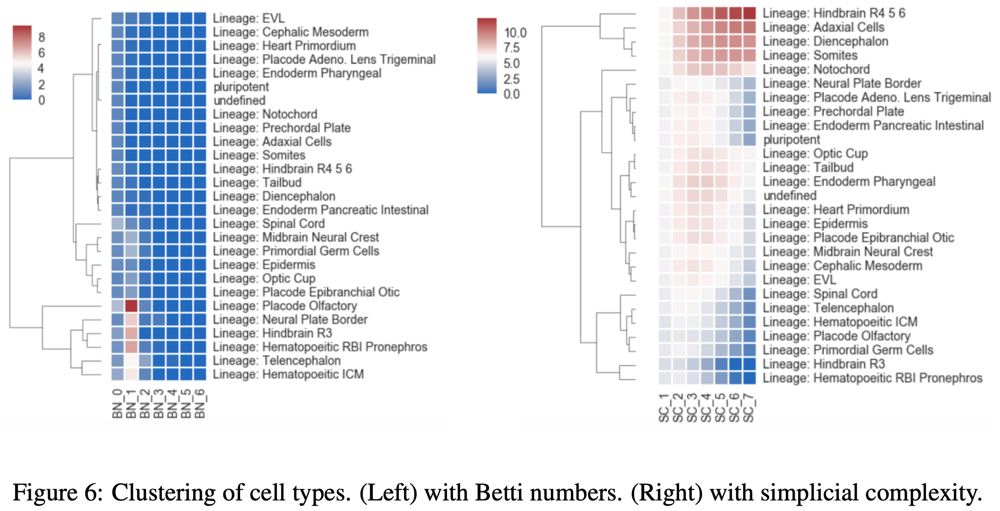
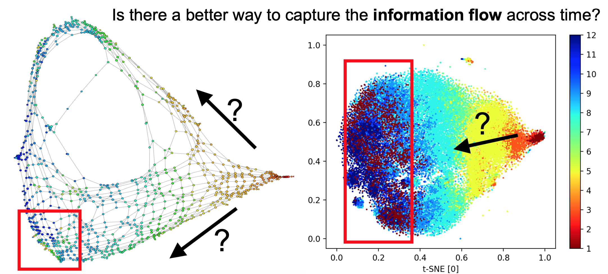
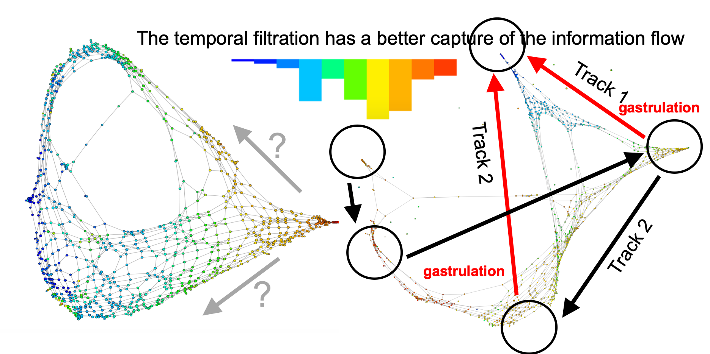
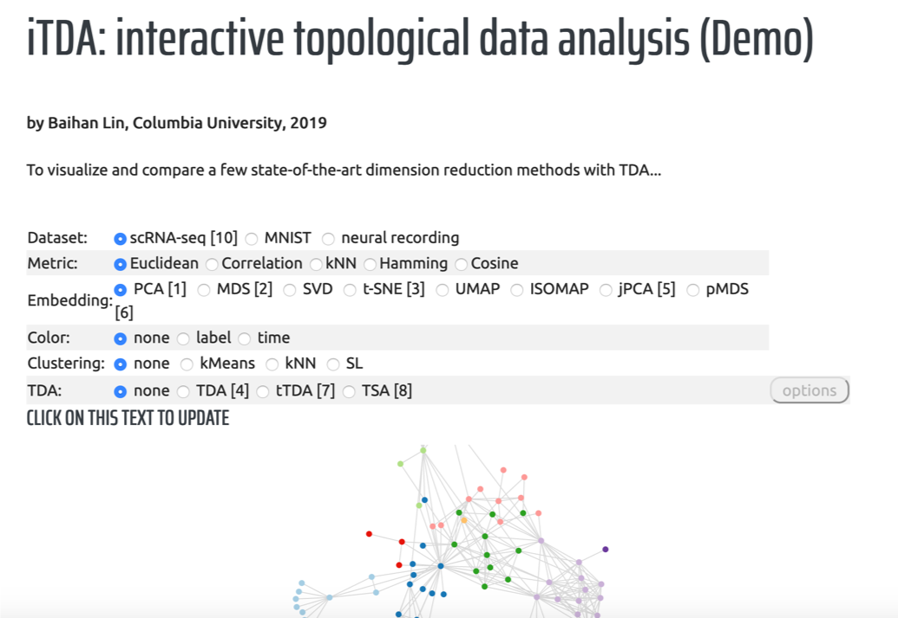

GitHub code for TSA: https://github.com/doerlbh/scTSA
GitHub code for tTDA: (work in progress, to come)
GitHub code for iTDA: (work in progress, to come)
with helpful suggestion from Dr. Raul Rabadan (Columbia) and Dr. Nikolaus Kriegeskorte (Columbia)
I developed several new visualization and inference methods within the framework of geometric and topological data analysis (TDA). Using the language of the mathematical field of algebraic topology, I investigated the possibility of introducing higher-order cliques as a summary statistics to visualize and understand complicated biological data, such as neural recording or single-cell genomics data. This page is an overview of several of my independent projects on TDA: topological simplicial analysis (TSA), temporal TDA (tTDA), interactive TDA (iTDA)...
The lack of a formal link between cell-cell cohabitation and its emergent dynamics into cliques during development has hampered our understanding of how cell populations proliferate, differentiate, and compete, i.e. the cell ecology. With the advancement of single-cell RNA-sequencing (RNA-seq), we have now come closer to describing such a link by taking cell-specific transcriptional programs into account, constructing graphs of a network that reflect the similarity of gene expres- sion, and analyzing these graphs using algebraic topology. We proposed single-cell topological simplicial analysis (scTSA). Applying this approach to single-cell gene expression profiles from local networks of cells in different developmental stages with different outcomes revealed a previously unseen topology of cellular ecology. These networks contain an abundance of cliques of single-cell profiles bound into cavities that guide the emergence of more complicated habitation forms. We vi- sualize these ecological patterns with topological simplicial architectures of these networks, compared with the null models. Benchmarked on single-cell RNA-seq of zebrafish embryogenesis over 25 cell types and 12 time steps, our approach highlights the gastrulation as the most critical stage, consistent with consensus in developmental biology. As a nonlinear, model-independent, and unsupervised framework, our approach can also be applied to tracing multi-scale cell lineage, identifying critical stages, or creating pseudo-time series.
[1] Lin, B. (2019). Cliques of single-cell RNA-seq profiles reveal insights into cell ecology during development and differentiation. In the 27th Conference on Intelligent Systems for Molecular Biology (ISMB).
[link][bibTex]
[2] Lin, B., Rabadan, R., & Kriegeskorte, N. (2019). What About Higher-Order Cellular Complexity? An Inquiry with Topological Simplicial Analysis. 2019 NeurIPS Workshop on Learning Meaningful Representations of Life (LMRL)
link: to come
Here we benchmarked on a zebrafish developmental single-cell RNA sequencing data with 12 time steps. As shown, scTSA identifies the critical stage (gastrulation) of development in cell complexity transition, , matching our understanding in the developmental biology that it is a process where the embryo begins differentiation into distinct cell types.

Normalized over the null model, we observe some interesting simplicial dynamics across developmental stages. (Left) Number of n-simplices computed from 100 sampled data points in each time points. (Right) Normalized number of n-simplices computed as the ratio of the data over null models.}

Here we see that given the normalized cell complexity, we can map out some interesting trajectories in the higher-order and lower-order domains of the simplicial space. Below is the transition of lower-order and higher-order normalized cell complexity across time. The arrow indicates the transition between the centroids in each groups.

Below demonstrated the hierarchical clustering of cell types. (Left) with Betti numbers. (Right) with simplicial complexity. The simplicial complexity offers a more reasonable clustering performance as a more distinctive summary statistics.

This method aims to visualize time-stamped high-dimensional data with double filtration in the topological data analysis. Given any type of time-stamped data, single-cell gene expression data , text from therapy sessions, stock market price etc., we can dissect the temporal domain with an additional multiplicative filtration criterion.
With this method, we can potentially answer interesting questions like: Does Schizophrenia patients tend to use cyclic linguistic features or constantly distract on topics? Do the development of zebrafish embryo follow more than one tracks during cellular differentiation? Does the brain use a recurrent or a feedforward computation strategy in understanding a scene? Does human visual processing have a multi-scale oscillatory regime in different brain regions?...
For instance, in this below zebrafish embryogenesis single-cell RNA sequencing data with 12 time steps, traditional TDA methods fail to extract a correct temporal flow in the data. (Left) TDA; (Right) t-SNE.

However, tTDA unravels the correct temporal skeletons and offers useful biological insights (Right).

This is a work in progress where I wish to develop an interactive web application where users can click to switch between different visualization methods in high-dimensional data. The core feature would be its focus on the TDA methods, where the user can specify the parameters for all internal geometric computation and intuitively select for the best hyperparameters.
